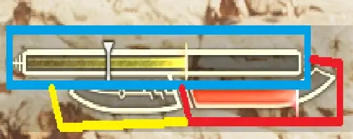
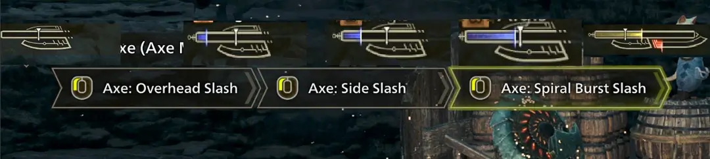

This guide was written by Sasch,
Feedback is very welcome either via DMs or in the Monster Hunter Gathering Hub’s Switch Axe Channel.
Remember to take your time. Don’t compare yourself to others, don’t let anyone tell you how you can and can’t enjoy the game you paid for.
This guide does not exist to push a meta onto you, merely to guide those who are a little lost on their way to achieve measurable greatness.
Despite being a ginormous Weapon, the Switch Axe has a rather short reach, with relatively low mobility for chasing or dodging monsters.
Despite this rather heavy nerf compared to previous iterations of the weapon, it can more than make up for it with the new changes and additions to the moveset:
a frame 1 counter, hyper armor on its big damage move, and a strong sword combo that allows for mid-combo repositioning, rendering the Switch Axe a Stand your Ground type weapon, relying on tight positioning to perform at its best, and iframe hops and rolls in a pinch.
This Weapon is for you if you:
The following is a list of the most commonly used moves:
Basic moves:
| Sharpness | Raw Mod | Elemod |
|---|---|---|
| Purple | 1.39 | 1.25 |
| White | 1.32 | 1.15 |
| Blue | 1.2 | 1.0625 |
| Green | 1.05 | 1 |
| Yellow | 1 | 0.75 |
| Orange | 0.75 | 0.5 |
| Red | 0.5 | 0.25 |
| Fig 3.0B - Sharpness Table | ||
Switch Axe revolves around two main mechanics: Amp and the Sword Gauge. Morphing into Sword, or attacking in Sword mode, consumes Sword Gauge, while Morphing into Axe, obtaining Amped State and hitting monsters in Axe mode generates Sword Gauge.

Fig. 4.0A - Sword Gauge, Amp Meter, Power Axe Indicator
In order to fully convey the mechanics at play, the use of some clarifying and specialized Language is required - the Monster Hunter Lingo.
The formula for damage in Wilds is:
The first big step for Swaxe numbers is understanding where Phials apply. While in Rise, they were a post modifier, i.e. apply where Sharpness etc applies, in Wilds they have been nerfed to a standard % modifier.
Additionally, numbers like 5% don’t actually mean 5%. Used instead are floating numbers, long decimals that when rounded turn out to be the number advertised.
Wilds introduced some Skills that are outwardly similar to Sunbreak’s Powder Mantle, where every once in a while, there will be a Pop for Damage. While they do share the Internal Cooldown mechanism of PM, they often have further restrictions.
The important, playstyle defining moves we have in Wilds are:
The Full Release Loop consists of:
Rising Slash Loop consists of:
After Rising Slash Left, you can either repeat the combo, or Loop off into either:
Framecount was done by hand, by recording stable 60 fps footage of comboing on the training dummy and counting the number of frames, starting on the frame before the Input showed up in the UI, ending on the last frame before the next moves input showed up, and thus include Hitlag to be a more accurate representation. All other moves can be found and read in the Calculator, linked on the Endgame Guide, Section 9, Resources.
((Base Raw x % Modifiers) + Flat raw) x Raw Sharpness Mod x (HZV/100) x (MV/100) x (Crit modifier x Chance)
+
((Base Element x % Modifiers) + Flat ele) x Ele Sharpness Mod x (eHZV/100) x elemod x (Crit Ele x Chance)
Secondly, some moves scale with sharpness, and others don’t - the easiest example of this are Gunlance Shells.
There are several separate instances of rounding and flooring, which further complicates accuracy.
The 5% mentioned previously in in-game calculation is actually 4.99999523162841796875% (actual number). Display Raw (in the status menu) is Floored (rounded down). This leads to 200 Raw + 5% actually showing as 209. With the addition of Phials to the Group of Base mods (but possibly even before that), the Status Screen is unreliable and not used in Damage Calculation.
Flayer’s proc can only activate if a part has not been wounded for a certain amount of time and is currently not wounded. Scorcher and Whiteflame behave similarly, on a 3 second internal cooldown, and otherwise RNG. While testing, the longest time I’ve seen for either of them was 14 seconds, the fastest being exactly 3. WF and Scorcher don’t have the same proc chance (from testing), and WF overwrites Scorchers chance.
Element Convert works on a threshold basis, which is either Monster or Rank dependent. The formula for it would be ((Flat component + (Dragon component x (Dragon eHZV/100))) x (Raw Damage/Threshold)) x Uptime, for an average “over the course of the hunt” calculation.
Specifically Flayer, and possibly more skills, don’t proc on certain Attacks - Wild Swing in particular. They do proc on all important moves though.
Rising Slash, Triple Slash, Morph Double Swing (Sword -> Axe), and Full Release.
Full Release Swing 1, 3x Phial Tick 1, Full Release Swing 2, 5x Phial Tick, Spiral Rising Slash 1, Spiral Rising Slash 2, “Axe Double Morph Swing” 1, Phial Tick, “SwordDouble Morph Swing” 2, Phial Tick.
This loop has 506 MV, 9.5 elemod and every component of it can crit. It takes about 9.63 Seconds to do.
Overhead Slash, Phial Tick, Rising Slash Right, Phial Tick, Rising Slash Left, Phial Tick.
By itself, this amounts to 159 MV and 4.05 elemod. It takes about 3.3 Seconds to complete.
Triple Slash, for 258 Total MV, 8.1 Total elemod, and a total Duration of about 5.42 Seconds,
Or
Morph Double Swing, which adds Sword: Morph Double Slash 1 and 2, for a total of 239 MV and 6.05 elemod, for a total Duration of either 5.02 (RM3), 5.18 (RM2), 5.35 (RM1), or 5.38 (RM0) Seconds.
Exhaust Phials, while in Sword Mode and while hitting heads, deal 5 KO damage.
Status works based on Thresholds and Buildup. By default, attacks have a 10 in 30 Chance to deal their respective Status. This means that on average, the chance of dealing status is 33.333…%, but 10 out of 30 hits are hard coded, guaranteed, to proc it; at the same time, no more than 10 out of 30 can.
Upon reaching the status threshold, the status comes into effect proper. Dealt status before reaching the threshold also decays over time, meaning in order to actually inflict statuses, you need to consistently and constantly attack. Each time a status is inflicted successfully, the threshold rises, up to a certain max Value. Values of those thresholds, max thresholds and decay vary depending on Monster and can usually be found on Kiranico.
Switch Axe has one numerically superior playstyle, and 3 competitors for second place.
Full Release is the de-facto move to Spam.
Secondary options are, in order of strength on paper:
Rising Slash, Triple Slash and Long Morph Loop,
All of which have slightly differing pros and cons.
Corrupted Mantle behaves largely similar to how Frontier’s Fencing+2 Skill works, namely that it provides a second hit - on some attacks. For Swaxe, the affected moves are the light attacks, namely Overhead/Rising Slash Combo and the Spiral Burst combo. With Corrupted Mantle active, Rising Slash beats Full Release (on paper), even after mantle nerf.
Utility Morphs: Dodgemorph You can perform a Morph from either sword mode after any dodge. The distance this covers has been nerfed compared to previous iterations.
Utility: Counter
Switch Axe gained a Counter in Sword Mode, which is active from Frame 1 and lasts roughly 1.5 seconds. Hitting this counter generates a lot of amp, and it can be followed up by Heavenward Slash.
Note: Perfect Counters generate more Amp than standard ones. To proc perfect counter, use it just as you’re about to get it. Normal counters give the character a slight blue hue, while Perfect Counters have a notable visual effect:
Fig 5.0A - Counter: Amp Generation, Comparison Perfect vs Normal Counter
Utility Morphs: 360° Morphs
360° Morphs are useful for repositioning and re-angling yourself. After any Dodge, hold any direction and press morph; this works even outside of Focus Mode.
Fig. 5.0B - 360° Morph Showcase
This can be used for simple repositioning, but also aggressively to sneak in a few extra hits.
Axemode: Fade Slash Holding Backwards and pressing is the input for the Fade Slash. It can be chained to any move that ends in axe mode, including (but not limited to):
ZSDZero Sum Discharge Using Elemental Discharge while Amped grants access to the Zero Sum Discharge, a very strong utility move that, similar to Rise/Sunbreak, will only end if the monster flies or digs to a different area, or you:
Spiral Burst Slash Combo
Spiral Burst Slash is the third hit of the “light” axe mode combo, aswell as a followup to several other moves, notably Full Release. Landing both hits generates a lot of sword gauge.

Fig. 5.0C - Sword Gauge RegenEmpty -> After Overhead -> After Side Slash -> After Spiral first hit -> After spiral Second hit
Full Release Slash Loop
The singular strongest raw-oriented combo in Swaxe’s kit.
Pretty much at will, while in sword mode:
Full Release Slash -> Spiral Burst Slash -> Axe: Morph Rising Double Slash -> Repeat
++, hold -> -> , repeat
The total loop stands at a ridiculous 506 MV and 9.5 elemod total (52.54 MV and 0.99 Elemod per second, respectively). It requires being in Sword Mode and Amped, and has a pretty long start-up, but from Frame 2 of the actual attack,
you gain hyper armor. Almost every other move is fluff and window dressing for Raw Sets focused on Full Release.
Note that it aims significantly farther to the right than the focus mode rectangle would make you believe, so adjust accordingly. Additionally, as of Title Update 1, Phial ticks no longer magnetize to the hitzone originally struck,
which means you’ll have to actually aim and understand where the swings pass through to get the most out of it.
Rising Slash Loop
Rising Slash is the strongest non-FRS loop for raw oriented Sets, and might see speedrun specific use in conjunction with Frenzy Mantle.
In Sword: Overhead Slash -> Rising Slash -> Rising Slash
-> ->
It’s simple, fast and can slightly reposition with every move of its combo, even without focus mode. Standing at 159 MV while amped (~48MV/s), it is our strongest non-full-release combo.
Triple Slash Loop
Similar to the Rising Slash Loop, but it adds the triple slash at the end of it. This combo stands at 47.6 MV and 1.49 elemod per Second, making it the go-to choice for heavily elementally invested sets, should element become relevant again.
In Sword: Overhead Slash -> Rising Slash -> Rising Slash -> Triple Slash -> Repeat
-> -> ->
New Morph Loop
Wilds changed where the Double Axe Morph Swing is, from Double Slash to after any of the Rising Slashes. Unfortunately, in the absolute best case scenario, it’ll barely beat out Rising Slash and Triple Slash.
To do so, it needs to juggle Power Axe and Amp, to beat the previous two by at most 1-2 DPS, only to still lose to FRS.
From Axe: Morph -> Rising Slash -> Morph -> Repeat
-> X ->
This combo can be extended by a second Rising Slash in Sword Mode, which makes it significantly stronger, but in its current iteration, it achieves Meme status at best, at least in terms of efficient playstyles. Hard requires Rapid Morph 3 to be worthwhile, despite its nerf from Risebreak.
This section will be short due to how new the game is.
Focus Strike:
Focus Strike can be used to force Sword Mode, which ultimately enables FRS with 0 Gauge.
Might Pill:
Might Pills now overwrite the Buff but not the timer of Might Seeds, meaning that if you take a seed and then a pill, after the pills 20 seconds are over, might seed applies again.
Counter Strike:
Countering, Hyper armoring and getting hit with knockback procs Counter Strike. At level 3, it gives 25 raw for 45 seconds.
Many high caliber players expressed concerns and questionable design choices with Wilds’ iteration of Switch Axe. While “new game bad, previous game better, hope next goes back to the roots” is a tale as old as time, the exorbitant centralization of a move like Full Release Slash is new.
As a guide writer, I am happy at how quick and easy that makes it for me - As a Swaxe main and Runner, it takes away from the fun and skill expression quite a bit.
That being said however, there is still a lot of room for experimentation and a large Toolkit for intentionally playing suboptimally, which may come in handy should Full Release get “adjusted downwards”.